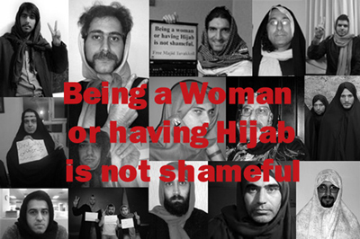

|
|
مجید توکلی و لباس زنانه
يكشنبه22 آذر 1388
دو روز بعد از شانزده آذر دعوت به گروپی در فیسبوک برایم آمد که در توضیح خود نوشته بود:
دیروز پیشنهادی رو در فیس بوک و شبکه های دیگر مطرح کردم که با استقبال زیادی روبرو شد.
دوباره بصورت مختصر توضیح می دهم:
مجید توکلی دانشجوی معترض به شرایط موجود در روز ۱۶ آذر با ضرب و شتم بازداشت شده.
در روز ۱۷ آذر عکسهایی از ایشان با لباس زنانه(چادر و روسری در خبرگزاریهای فارس و ...) منتشر شده.
بازداشت این دانشجوی شجاع و انتشار چنین عکسهایی فقط و فقط برای فشار بر جنبش دانشجویی و حرکت سبز ملت ایران انجام شده و در همین زمان تلاشی است برای تحقیر کردن کلیه زنان این سرزمین برای اینکه ثابت کنیم با مجید توکلی هستیم، برای اینکه بگوییم لباس زنانه(منظور حجاب) بد نیست و این حجاب اجباریست که بد است. چه بر تن زنان این سرزمین و چه بر چهره مجید توکلی، برای اینکه کج اندیشان بدانند ما همه با هم هستیم، عکسهایتان را با حجاب به این آدرس بفرستید.
شروع این بحث را می توان به مقاله مسیح علی نژاد با عنوان "قصه تحقیر مجید توکلی, قصه حقارت زنان سرزمین من هم هست" ارجاع داد.
و کمتر از یک روز از این دعوت نگذشته بود که عکس های پسرهای جوان با روسری و حجاب در شبکه های اینترنتی توسط خود آن اشخاص منتشر شد و تعداد این عکس ها و مردهایی که از خود با حجاب عکس می گیرند در حال افزایش است.

در اکثر این عکس ها افراد دست خود را به علامت پیروزی بالا برده اند و یا نشانی از رنگ سبز دارند (روسری سبز و یا دست بند سبز). در یکی از این عکس ها که سه پسر با روسری های سبز ایستاده اند کاغذهایی با این نوشته ها در دست دارند:
Gender Equality/ Free Majid Tavakkoli
و در کنار اولین عکسی که منتشر شد که تصویر پسری است با تی شرت سبز و چیزی شبیه به روسری نوشته شده است:
حمایت از مجید توکلی، به افتخار همه زنان و دختران دلیر و شجاع میهنم
این موج جدید که فعلا فقط در محدوده اینترنت گسترش یافته است از چندین جهت قابل تامل وامید بخش است. مهمترین وجه آن شروعش توسط مردان بدون دخالت فعالان زن است که نشان دهنده این موضوع است که دیگر حتی مردان جوان هم نسبت به قصد تحقیر یک مرد به واسطه لباس زنانه توسط حکومت ساکت نمی نشینند. این حرکت از جانب حکومت، سالهای اولیه انقلاب هم به شکل دیگری وجود داشت. برای مثال تاکیدی که هنوز هم بر فرار بنی صدر از کشور با چادر می شود و شعار حکومتیان در این باب:
اون که می گفت "مقاومت،مقاومت" در رفته، مرد که نبود لچک به سردر رفته
این شعار دیدگاه حکومت را خیلی روشن بر تحقیر مردان به واسطه لباس زنانه تن کردن نشان می دهد چرا که به زن به عنوان جنس دوم نگریسته می شود.
وجه دوم این موج همه گیر بودن آن است به این معنی که خیلی از مردان جوانی که قبلا نه فعالیتی برای دفاع از حقوق زنان داشته اند و نه حتی فعالیت سیاسی تا قبل از انتخابات داشته اند، با سر کردن روسری به این کمپین پیوسته اند و این عمومی شدن مطالبات را نشان می دهد چرا که نفس این اعتراض و شکل آن، اعتراض به جنس دوم دانستن زن در کنار اعتراض به دستگیری مجید توکلی را نشان می دهد.